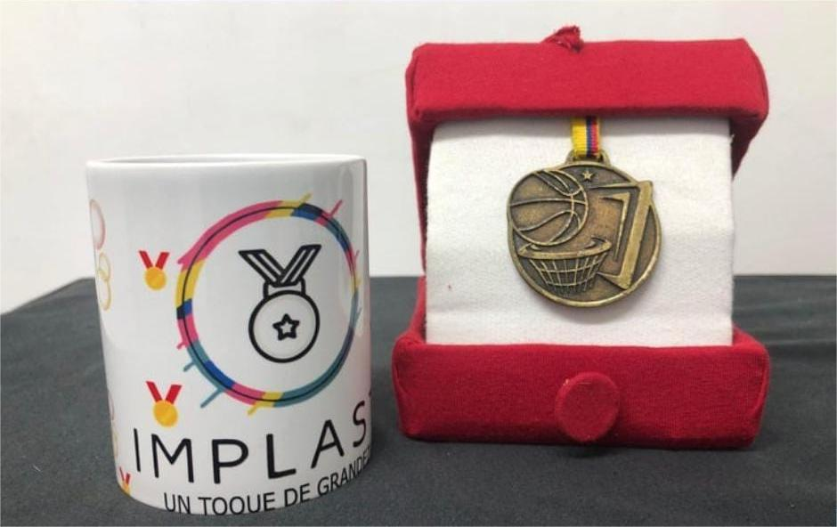
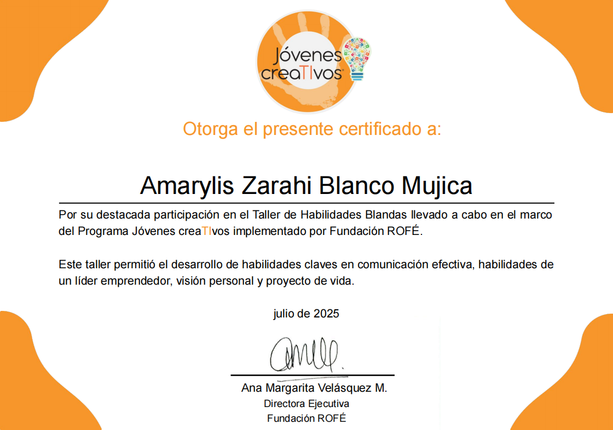
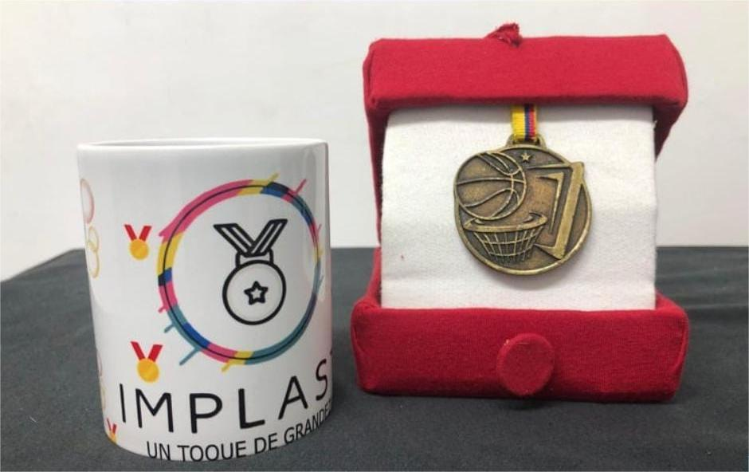
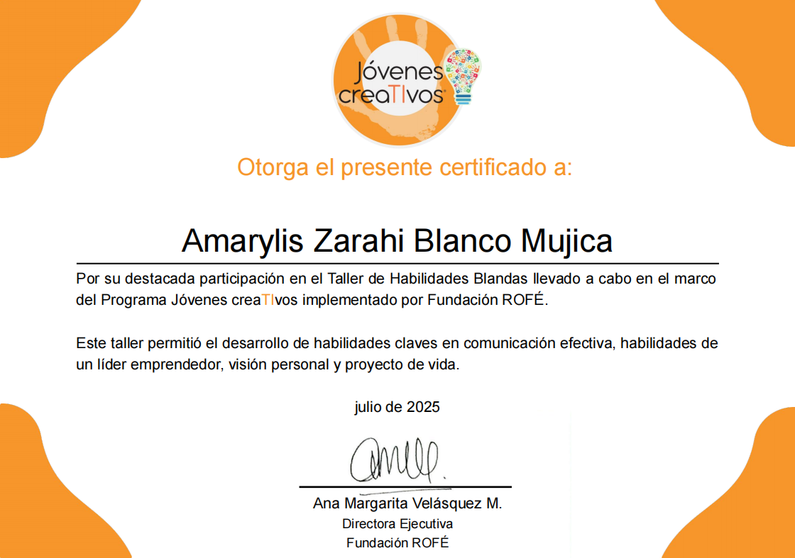

Proyecto Implast
Durante mi formación en el colegio, donde obtuve el título de Auxiliar Técnico en Diseño Gráfico, creé un emprendimiento innovador llamado Implast, una idea de negocio enfocada en la transformación del plástico en medallas deportivas. Este proyecto me permitió explorar el diseño sostenible y aplicar mis conocimientos gráficos a una iniciativa con impacto social y ambiental.
Además, adquirí experiencia en diferentes métodos de estampado, como:
- Serigrafía
- Sublimación
Actualmente, formo parte del proyecto “Jóvenes Creativos” de la Fundación Rofé, donde me estoy especializando en desarrollo web.
Hasta el momento he obtenido dos certificados:
- Habilidades Blandas – Comunicación, liderazgo y trabajo en equipo.
- Emprendimiento – Herramientas para fortalecer ideas y proyectos de negocio.
Estos logros reflejan mi interés constante por aprender, crecer y aplicar mis conocimientos en proyectos innovadores que combinen el diseño, la sostenibilidad y la tecnología.
← Volver al inicio 


